Keyboard Shortcuts
The tables below list every keyboard shortcut in LemmaLoom, separated by menu. Where exactly each of these shortcuts applies is also noted.
See Conventions in Chapter 1, Introduction for descriptions of modifier key symbols used throughout these menus. ⌘ refers to Command, ⇧ to Shift, ⌥ to Option, and ⌃ to Control. Keyboard shortcuts displayed here are for a US keyboard layout. If you are using a different keyboard layout, macOS may remap keyboard shortcuts such as ⇧⌘[ to keys available to you; the menu will reflect that change.
How shortcuts work
Every shortcut in LemmaLoom corresponds to a command displayed in the menu bar next to the keys needed for the action. Exceptions to this rule include Esc, Return, the arrow keys, and the Delete key (⌫), which act on whichever part of the window is currently being used (see Esc, Return, and the arrow keys later in this chapter). Some actions require you to click or scroll on something in addition to pressing a key (see Clicks with a modifier key later in this chapter). Lastly, the script editor found in the Analyzers window also has its own set of editing keyboard shortcuts (see Chapter 20, Custom Analyzers).
Shortcuts always act on the active window. If the main window is active, commands for a document act on the document in the active tab. In split view, actions will affect the pane you clicked in last; this is known as the active pane (see The active pane in Chapter 9, Translations and Split View).
A shortcut works only while its command is available in the menu. Document ▸ Code (⇧⌘C), for example, stays disabled until you select a word or a passage in the reader. The last column of each table below says what a command needs.
A few commands change their name with certain situations but retain the same keys. Additionally, some key combinations serve different functions depending on which window is being used:
- ⇧⌘B is either Bookmark, or Remove Bookmark when the selection overlaps a bookmark.
- ⇧⌘L is either Link, or Finish Link once a link has been started.
- ⇧⌘A is Auto Code… unless more than one of the enabled lenses has an option to auto code passages. When multiple such lenses are enabled, the key corresponds to the first of the commands named after them, e.g., Auto Code with Hedges….
- ⇧⌘P switches between Play and Pause when playing recordings.
- ⌘W closes tabs (Close Tab) in the main window while a tab is open. Everywhere else, ⌘W corresponds to Close instead.
- ⌘⌫ deletes projects, sets, groups, or documents when selected in the navigation sidebar (Delete Project, Delete Set, Delete Group, Delete Document, or Delete Documents). It deletes all selected documents simultaneously when more than one is selected. Inside the Analyzers window, ⌘⌫ deletes analyzers from the list (Delete Analyzer) while the list is active.
- ⌘+, ⌘-, and ⌘0 increase/decrease/reset the text size (Larger Text, Smaller Text, Reset Text Size), but in the Diagram window they respectively zoom in/out and restore actual size (Zoom In, Zoom Out, Actual Size).
- ⌃⌘F is Enter Full Screen, or Exit Full Screen in full screen.
When editing a document’s text, Save (⌘Return) and Cancel (⌘.) take the place of Edit (⇧⌘E). While linking passages, Cancel Link (⌥⇧⌘L) becomes visible below Finish Link.
Shortcuts in each window
LemmaLoom has a main window and multiple smaller windows. All of these share a common menu bar. However, most of the commands available via the menu require context provided by either the main window or an open document, meaning when another window is active, those commands appear disabled until you click the main window. Some smaller windows provide additional commands.
| Active window | Shortcuts that work |
|---|---|
| The main window | All of them, when what they act on is open, except those that belong to the Diagram and Analyzers windows |
| A document in a window of its own (choose Window ▸ Open in New Window, or right-click a document’s tab and choose Open in New Window) | The Document menu; Find, Find Next, and Find Previous; Toggle Inspector and the four inspector tabs; Larger Text, Smaller Text, and Reset Text Size; Run Query while the inspector shows a query; the commands under View ▸ Word Sketch while it shows a word sketch; Close (⌘W) |
| The Word Sketch window | The commands under View ▸ Word Sketch; Close (⌘W) |
| The Diagram window | Zoom In, Zoom Out, and Actual Size; Close (⌘W) |
| The Codebook window | Run Query in its Queries view, and the commands under View ▸ Word Sketch in its Word Sketch view; Close (⌘W) |
| The Queries window | Run Query (⌘R); Close (⌘W) |
| The Analyzers window | Delete Analyzer (⌘⌫) while the list is active; Close (⌘W) |
| Any other window, such as Tags, Attributes, Activity, Glossary, or Settings | Close (⌘W) |
There are several menu item shortcuts available no matter which window has focus, namely File ▸ New Window (⌘N), LemmaLoom ▸ Settings… (⌘,), Window ▸ Activity (⌥⌘0), Window ▸ Minimize (⌘M), Edit ▸ Undo (⌘Z), and Edit ▸ Redo (⇧⌘Z). All the typical macOS keyboard shortcuts function as usual as well, such as Copy (⌘C) and Quit LemmaLoom (⌘Q). View ▸ Enter Full Screen functions in the main window, the Queries window, and results windows.
Shortcuts by menu
The tables run through the menu bar from left to right. Each table lists all LemmaLoom commands of its menu in order.
LemmaLoom
| Command | Shortcut | Where it works |
|---|---|---|
| LemmaLoom ▸ About LemmaLoom | None | Any window. See About LemmaLoom in Chapter 26, Help and Support. |
| LemmaLoom ▸ Settings… | ⌘, | Any window. Opens Settings, or switches to it if it is already open. See Chapter 24, Settings and Appearance. |
| LemmaLoom ▸ Hide LemmaLoom | ⌘H | Any window. Click LemmaLoom in the Dock to show its windows again. |
| LemmaLoom ▸ Hide Others | ⌥⌘H | Any window. Hides the windows of other applications. |
| LemmaLoom ▸ Quit LemmaLoom | ⌘Q | Any window |
Quitting ends the undo history, which lasts only while LemmaLoom is running (see How long the history lasts in Chapter 23, Undo and Redo). LemmaLoom also quits whenever you close its last open window, such as closing the main window with ⇧⌘W when nothing else is open.
File
| Command | Shortcut | Where it works |
|---|---|---|
| File ▸ New Window | ⌘N | Any window. Opens another main window. |
| File ▸ New Project | ⇧⌘N | Main window |
| File ▸ New Group | ⌥⌘N | Main window, once there is an active project. The group appears in the sidebar with its name ready for typing. |
| File ▸ Import ▸ Documents | ⇧⌘I | Main window, once there is an active project. Opens a file dialog for text, PDF, audio, and video files. |
| File ▸ Import ▸ Web Pages | ⌥⇧⌘I | Main window, once there is an active project. Opens a dialog for web addresses. |
| File ▸ Import ▸ REFI-QDA Project, REFI-QDA Codebook, and LemmaLoom Archive | None | Main window. REFI-QDA Codebook needs an active project. See Chapter 22, Exchanging and Exporting. |
| File ▸ Import ▸ Example Project | None | Main window. Adds “Climate Debate” as a new project in the language of the interface. See The example project in Chapter 1, Introduction. |
| File ▸ Export ▸ REFI-QDA Project, REFI-QDA Codebook, and LemmaLoom Project | None | Main window, once there is an active project |
| File ▸ Export ▸ LemmaLoom Document or LemmaLoom Documents | None | Main window, with documents selected in the sidebar or a document active in the reader. The name follows the number of selected documents. See Exporting documents in Chapter 22, Exchanging and Exporting. |
| File ▸ Export ▸ LemmaLoom Set | None | Main window, with a set selected in the sidebar or open in the active tab. See Exporting a set in Chapter 22, Exchanging and Exporting. |
| File ▸ Close Tab | ⌘W | Main window, while a tab is open. With the right pane of a split view active, it closes the split view. |
| File ▸ Close Window | ⇧⌘W | Main window, while a tab is open |
| File ▸ Close | ⌘W | Every other window, and the main window when no tab is open. Closes the window. |
All import and export commands except Import ▸ Documents and Import ▸ Web Pages are disabled whenever another import/export action is happening.
Which tab becomes active after you close a tab is covered under Closing tabs in Chapter 3, Projects and Documents.
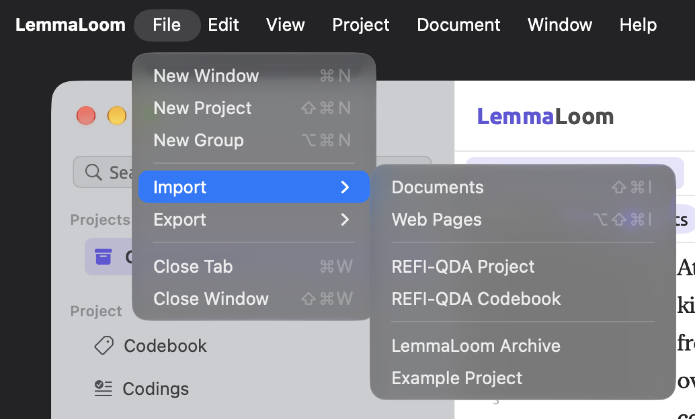
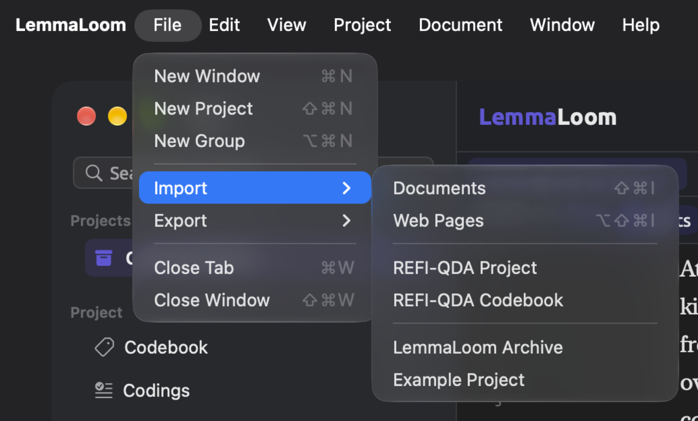
Edit
| Command | Shortcut | Where it works |
|---|---|---|
| Edit ▸ Undo | ⌘Z | Any window with a step to undo. The command names the step, such as Undo Apply Code. |
| Edit ▸ Redo | ⇧⌘Z | After an undo, until you make a new change |
| Edit ▸ Cut, Copy, Paste | ⌘X, ⌘C, ⌘V | Text fields. Copy also copies text selected in the reader. |
| Edit ▸ Select All | ⌘A | Text fields, and the reader once you have clicked in a document’s text. There it selects the whole document, and the selection bar appears. |
| Edit ▸ Move to Category | None | In the Dictionaries view, with terms selected in a category. Moves them to the category you choose. See Adding and removing terms in Chapter 19, Dictionaries. |
| Edit ▸ Delete Analyzer | ⌘⌫ | Analyzers window, with an analyzer selected. The shortcut works while the list is active, as it is after you click an analyzer. See Deleting an analyzer in Chapter 20, Custom Analyzers. |
| Edit ▸ Find | ⌘F | With a document active whose text has loaded, except while you edit it. Opens the search bar. Pressed again, it closes the bar and clears the search. |
| Edit ▸ Find Next | ⌘G | While the search bar has matches. After the last match comes the first. |
| Edit ▸ Find Previous | ⇧⌘G | While the search bar has matches. Before the first match comes the last. |
| Edit ▸ Find Document | ⇧⌘F | Main window, once there is an active project. Puts the cursor in the Search Documents field at the top of the sidebar, and shows the sidebar first if it is hidden. See The navigation sidebar in Chapter 3, Projects and Documents. |
| Edit ▸ Query from Selection | None | With words selected in the reader, except while you edit. See Query from Selection in Chapter 17, Query Patterns and Discovery. |
| Edit ▸ New Query | None | Wherever a query is shown. Puts an empty query in place of the current one. |
| Edit ▸ Run Query | ⌘R | Wherever the active window shows a query. Disabled while the query has an error that stops it from running, such as an invalid pattern. |
Each window maintains a separate undo history, and ⌘Z affects only the history of the currently active window. When your cursor is located within a text field, ⌘Z will undo typing in that text field instead. For detailed information on both actions, please refer to Chapter 23, Undo and Redo.
Run Query executes the query displayed in the currently active window immediately. A query is displayed within a window in one of these places:
- in the Query facet of the inspector’s Multimode tab (the row below the tabs consists of facets; see The inspector in Chapter 2, Getting Started);
- within the Queries view in a set, a tag, or the project, both in the main window and in the Codebook window;
- within the Queries window (access Window ▸ Queries).
A query in a document runs automatically after each change you make to it. A query in a set or project composed of documents amounting to about 300,000 tokens (words and punctuation marks together) or greater waits for you and displays a Run Query button if it reads their text. You can execute it with ⌘R faster than any other way (see Running a query in Chapter 15, Building a Query).
New Query inherits the unit of the current query, the kind of item it finds (see Choosing what to find in Chapter 15, Building a Query). This feature resets any unsaved changes made so far. You can undo the deletion of those changes via Edit ▸ Undo.
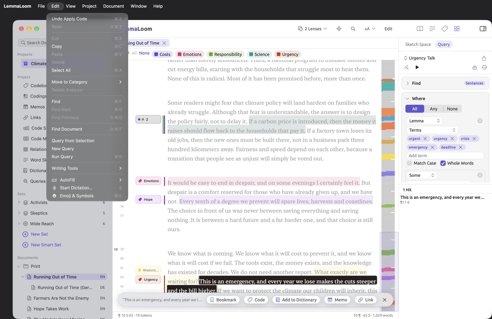
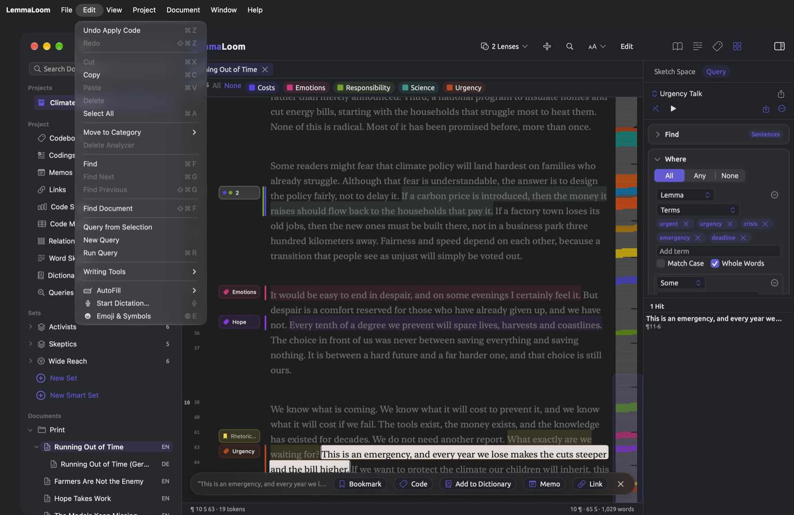
View
| Command | Shortcut | Where it works |
|---|---|---|
| View ▸ Toggle Sidebar | ⌃⌘S | Main window |
| View ▸ Toggle Inspector | ⌃⌘I | Main window and a document’s own window. In the main window, it is disabled while the active tab is a set, a tag, or a view of the project shelf. Each document remembers whether its inspector was shown. |
| View ▸ Inspector ▸ Text | ⌥⌘1 | With a document active, in the main window or in its own window |
| View ▸ Inspector ▸ Grammar | ⌥⌘2 | As for Text |
| View ▸ Inspector ▸ Coding | ⌥⌘3 | As for Text |
| View ▸ Inspector ▸ Multimode | ⌥⌘4 | As for Text |
| View ▸ Larger Text | ⌘+ | With a document active, in the main window or in its own window. Up to 200 percent. |
| View ▸ Smaller Text | ⌘- | As for Larger Text. Down to 70 percent. |
| View ▸ Reset Text Size | ⌘0 | As for Larger Text, when the size is not 100 percent |
| View ▸ Zoom In | ⌘+ | Diagram window. See The Diagram window in Chapter 11, The Grammar Inspector. |
| View ▸ Zoom Out | ⌘- | Diagram window |
| View ▸ Actual Size | ⌘0 | Diagram window, when the diagram is not at its actual size |
| View ▸ Zoom to Fit | None | Diagram window |
| View ▸ Scroll Together | ⌥⌘L | Main window, in split view with two language versions of one document. A checkmark shows when it is on. See Scrolling together in Chapter 9, Translations and Split View. |
| View ▸ Word Sketch ▸ Back | ⌘[ | In the Word Sketch view and window, and in the word sketches of the inspector, once the history has an earlier word. See Going back and forward in Chapter 12, Word Sketch. |
| View ▸ Word Sketch ▸ Forward | ⌘] | As for Back, after you have gone back |
| View ▸ Word Sketch ▸ Focus Word Field | ⌘L | In the Word Sketch view and window, and in the word sketches of the inspector. Puts the cursor in the Word field. |
| View ▸ Word Sketch ▸ Grammar, Coding, and Multimode | ⌘1, ⌘2, ⌘3 | In the Word Sketch view and window, and in the word sketches of the inspector. Switches to that mode, and a checkmark shows the current one. |
| View ▸ Enter Full Screen | ⌃⌘F | The main window, the Queries window, and results windows. The menu may show the keys as fn F (the Globe key and F); both work. See The full-screen reader in Chapter 5, Reading and Editing. |
⌥⌘1 through ⌥⌘4 display the inspector if it isn’t currently showing, then switch to the tab. If a set, a tag, or a project shelf view like Codebook is the active tab, the inspector will be closed automatically, and Toggle Inspector, along with ⌥⌘1 through ⌥⌘4, will become disabled. If you need more info on the project shelf, see The project shelf in Chapter 2, Getting Started.
Larger Text, Smaller Text, and Reset Text Size will change the text sizes of every document by increments of 10 percent. They use the same setting as the Text Size slider in Settings (see Text size in Chapter 5, Reading and Editing); however, in the Diagram window, ⌘+, ⌘-, and ⌘0 zoom in/out/reset the diagram. On US keyboards, ⌘+ is equivalent to pressing ⇧⌘= for both Larger Text and Zoom In.
Commands listed under View ▸ Word Sketch will apply actions related to the Word Sketch view of the project, the Word Sketch view of a set/tag, the Word Sketch window itself, and the word sketches found in the inspector. Since modes in the inspector refer to word sketches, when you select Grammar mode, for example, you’ll see Word Sketch in the inspector’s Grammar tab, Coding will bring up Code Sketch in the Coding tab, and Multimode will display Sketch Space in the Multimode tab. All three use the same history for storing your word sketches, so the word carries over.
Show Tab Bar and Show All Tabs, at the top of the menu, come directly from macOS. They pertain to merging windows into tabs.
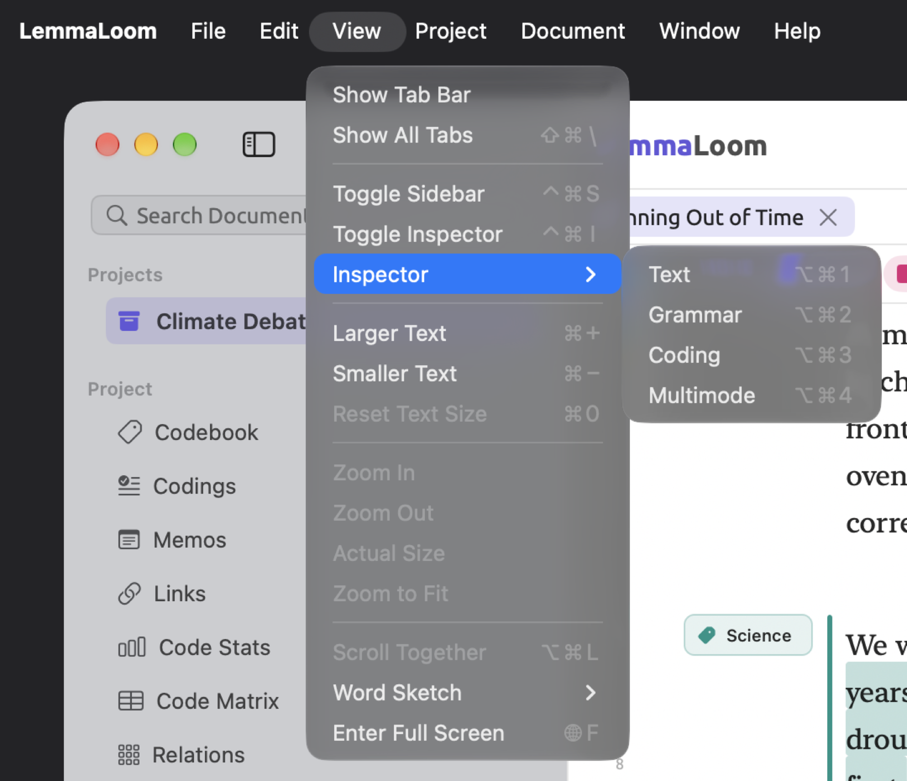
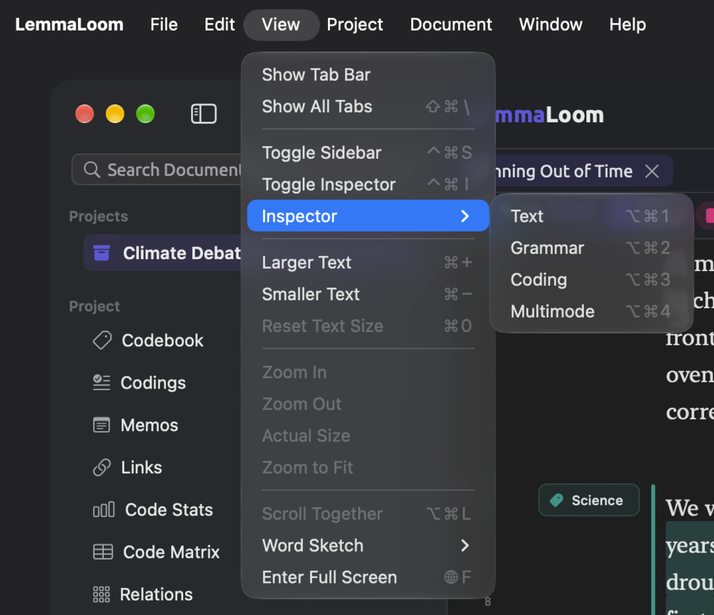
Project
Most commands from this menu affect whatever is selected from the navigation sidebar, making them operate from the main window. However, for commands relating to codes, they operate based on whichever code has been selected within the Codebook view or Codes facet of any window. Learn more about this in Chapter 3, Projects and Documents, Chapter 8, Sets, Groups, Tags, and Attributes, and Organizing codes in Chapter 7, Coding.
| Command | Shortcut | Where it works |
|---|---|---|
| Project ▸ New Set and New Smart Set | None | Main window, once there is an active project |
| Project ▸ Edit Smart Set | None | Main window, with a smart set selected in the sidebar or open in the active tab |
| Project ▸ Add Code | None | Main window, once there is an active project |
| Project ▸ Add Subcode, Move To, Merge Into, Add to Code Set, and Delete Code | None | With a code selected in the Codebook view or in the Codes facet |
| Project ▸ Rename and Properties | None | Main window, with one document selected in the sidebar |
| Project ▸ Move to Group and Add to Set | None | Main window, with documents selected in the sidebar |
| Project ▸ Remove from Set | None | Main window, with one or more documents selected under the same set in the sidebar, as long as it is not a smart set |
| Project ▸ Translate | None | Main window, with an original selected in the sidebar or active in the reader |
| Project ▸ Delete Project, Delete Set, Delete Group, Delete Document, or Delete Documents | ⌘⌫ | Main window, after you click a project, a set, or a group in the sidebar, or select documents under Documents. The command is named after what it deletes. |
| Project ▸ Attributes | None | Main window, once there is an active project. Opens the Attributes window. |
| Project ▸ Open | None | Main window, once there is an active project. Lists the ten views of the project shelf and opens the one you choose in a tab. |
Documents and projects can only be deleted after confirmation. Sets and groups, on the other hand, are deleted instantly, and Edit ▸ Undo (⌘Z) brings them back.
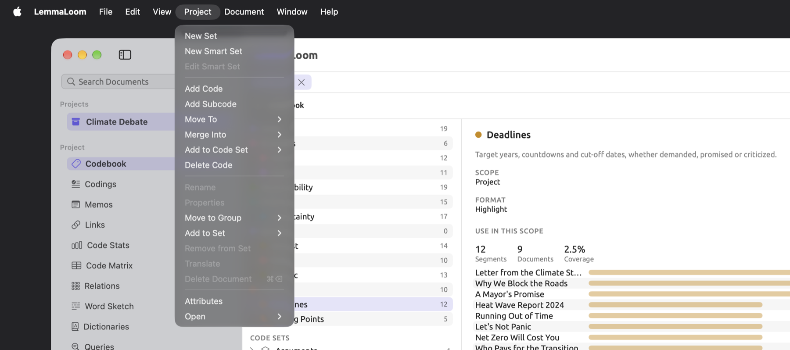
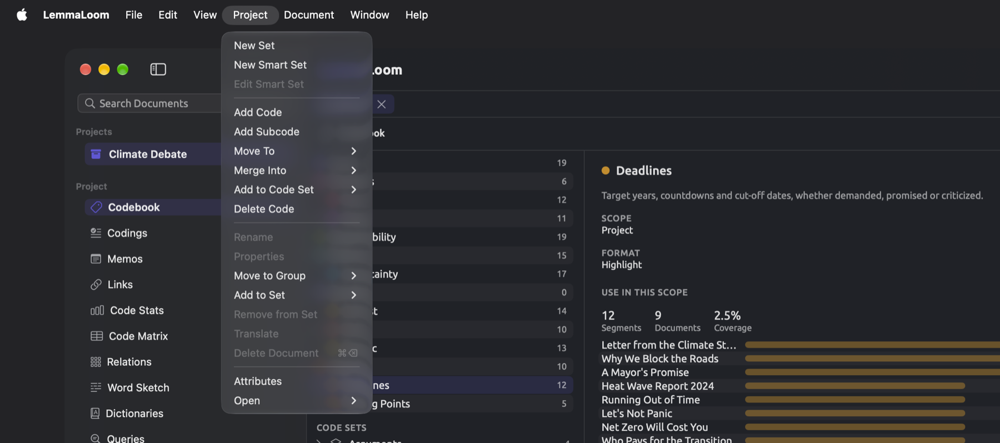
Document
These commands operate upon the document in the active pane, or in a document’s own window.
| Command | Shortcut | Where it works |
|---|---|---|
| Document ▸ Edit | ⇧⌘E | Once the document’s text has loaded. Turns the reader into a text editor. |
| Document ▸ Save | ⌘Return | While you edit. Saves the text, which LemmaLoom then indexes again. |
| Document ▸ Cancel | ⌘. | While you edit. Discards everything typed since you chose Edit. |
| Document ▸ Code | ⇧⌘C | With a word or passage selected, except while you edit. Opens the code palette, the list of codes you can apply to the selection. |
| Document ▸ In Vivo Code | ⇧⌘V | As for Code. Codes the selection with a code named after its words, and creates that code if there is none of that name yet. See Coding a passage in Chapter 7, Coding. |
| Document ▸ Auto Code… | ⇧⌘A | With a dictionary, query, or analyzer lens enabled in the lens menu (see Chapter 6, Lenses). With more than one of them enabled, the menu has a command for each, named after the lens, such as Auto Code with Hedges…, and ⇧⌘A goes with the first. See Coding passages automatically in Chapter 7, Coding. |
| Document ▸ Memo | ⇧⌘M | As for Code. Opens the New Memo dialog for the selection. |
| Document ▸ Bookmark | ⇧⌘B | As for Code. Opens the New Bookmark dialog. When the selection overlaps a bookmark, the command is Remove Bookmark and removes it at once; ⌘Z brings it back. |
| Document ▸ Link | ⇧⌘L | As for Code. Starts a link from the selection. The command then becomes Finish Link. Select the other passage, in this document or another, and press ⇧⌘L again to open the New Link dialog. |
| Document ▸ Cancel Link | ⌥⇧⌘L | While you are making a link, with or without a selection. Gives up the link you started. |
| Document ▸ Play | ⇧⌘P | Audio and video documents. While the recording plays, the command is Pause. |
Edit, Save, and Cancel commands are disabled while LemmaLoom saves your changes.
For applying codes, creating memos, adding bookmarks, and making links, further details can be found in Chapter 7, Coding. Editing your texts and playback are discussed in Chapter 5, Reading and Editing.
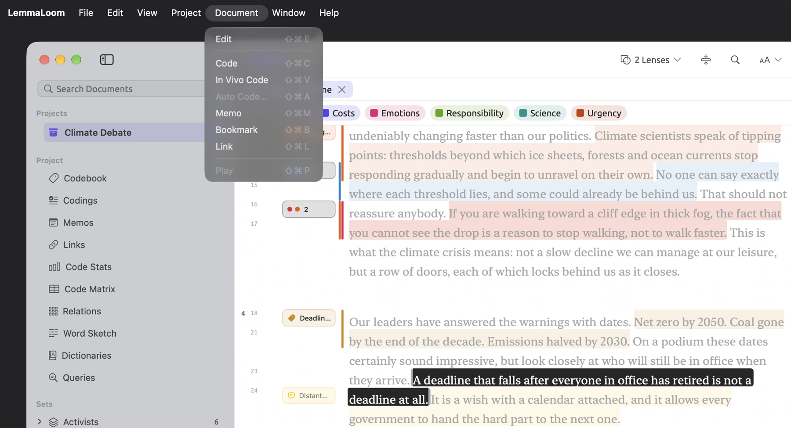
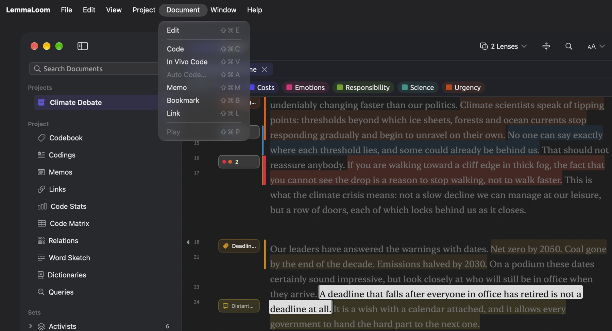
Window
| Command | Shortcut | Where it works |
|---|---|---|
| Window ▸ Minimize | ⌘M | The active window |
| Window ▸ Show Previous Tab | ⇧⌘[ | Main window, with at least two tabs open. Before the first tab comes the last. |
| Window ▸ Show Next Tab | ⇧⌘] | Main window, with at least two tabs open. After the last tab comes the first. |
| Window ▸ Open in New Window | None | Main window. Opens the document in the active pane, or the view in the active tab, in a window of its own. In the tab of a set or a tag, only the Word Sketch and Queries views open in a window. See Opening a document in its own window in Chapter 5, Reading and Editing. |
| Window ▸ Open in Split View | None | Main window, with a document active. Lists the open documents that can go beside it. See Opening two documents side by side in Chapter 9, Translations and Split View. |
| Window ▸ Open Beside Original | None | Main window, with a translation selected in the sidebar or active in the reader |
| Window ▸ Open Side by Side | None | Main window, with two documents selected in the sidebar |
| Window ▸ Close Split View | None | Main window, in split view |
| Window ▸ Activity | ⌥⌘0 | Any window. Opens the Activity window, or switches to it if it is already open. See The Activity window in Chapter 4, Importing Material. |
| Window ▸ Analyzers | None | Any window. See Chapter 20, Custom Analyzers. |
| Window ▸ Codebook | None | Any window, once there is an active project. See The Codebook view in Chapter 7, Coding. |
| Window ▸ Tags | None | Any window. See The Tags window in Chapter 3, Projects and Documents. |
| Window ▸ Queries | None | Any window. See The Queries window in Chapter 15, Building a Query. |
The tabs refer to those above the reader, specifically the documents, sets, tags, and views from the project shelf. Activating any tab makes the left pane active in any split view that you may currently be viewing.
At the lower end of the menu, macOS provides two other options labeled Show Previous Tab and Show Next Tab; these switch between merged windows. However, for switching the tabs above the reader, you must use ⇧⌘[ and ⇧⌘] accordingly. Finally, the list of open LemmaLoom windows is displayed at the bottom of the menu.
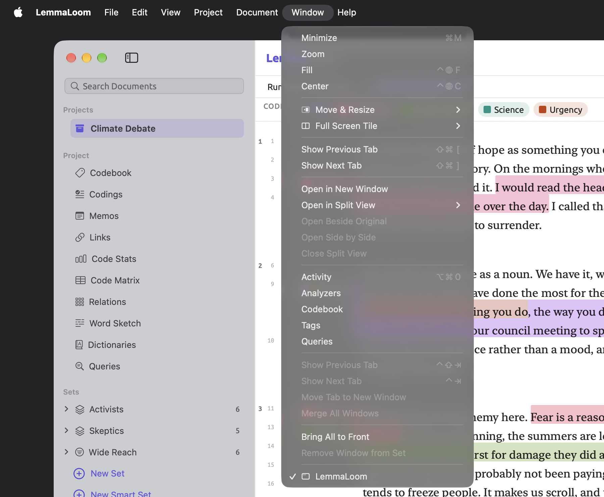
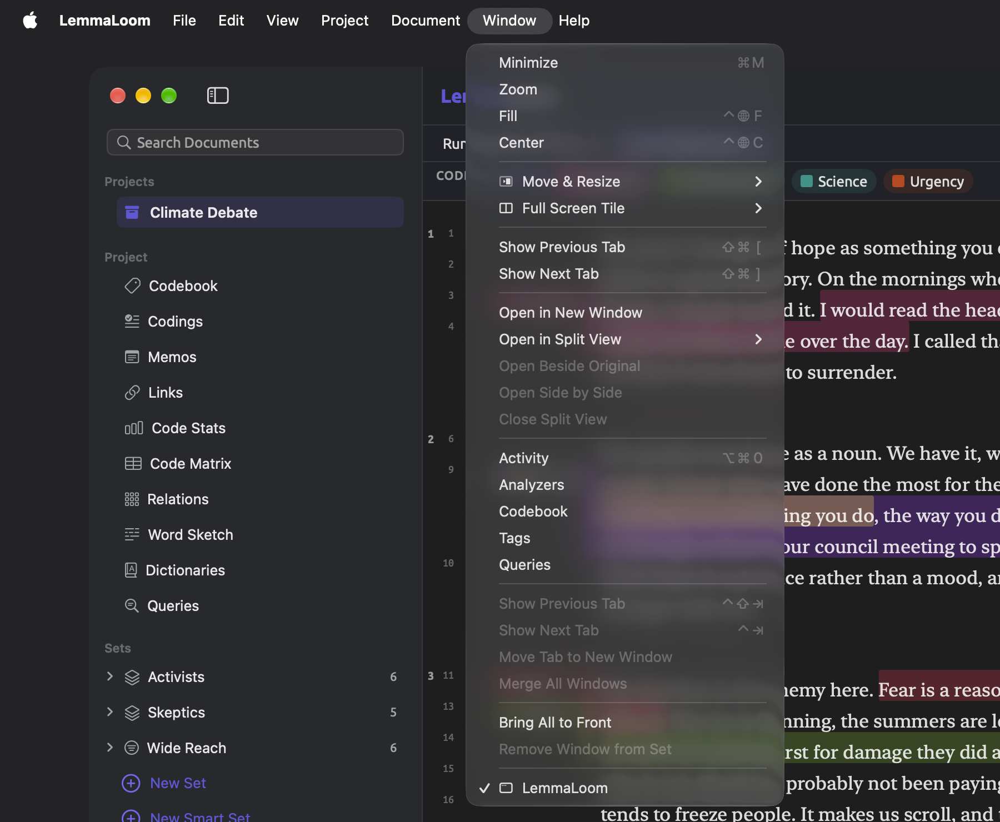
Help
| Command | Shortcut | Where it works |
|---|---|---|
| Help ▸ Glossary | None | Any window. See The Glossary in Chapter 26, Help and Support. |
| Help ▸ Send Feedback | None | Any window. See Sending feedback in Chapter 26, Help and Support. |
Buttons that have a shortcut
Many buttons behave like a menu command and have the same shortcut keys as the menu command. These buttons usually lie inside the title band at the top of the reading area, or the search bar beneath it. Some buttons may appear in the selection bar once selections are made, and in the player bar in an audio/video document. Chapter 5, Reading and Editing gives detail about each one.
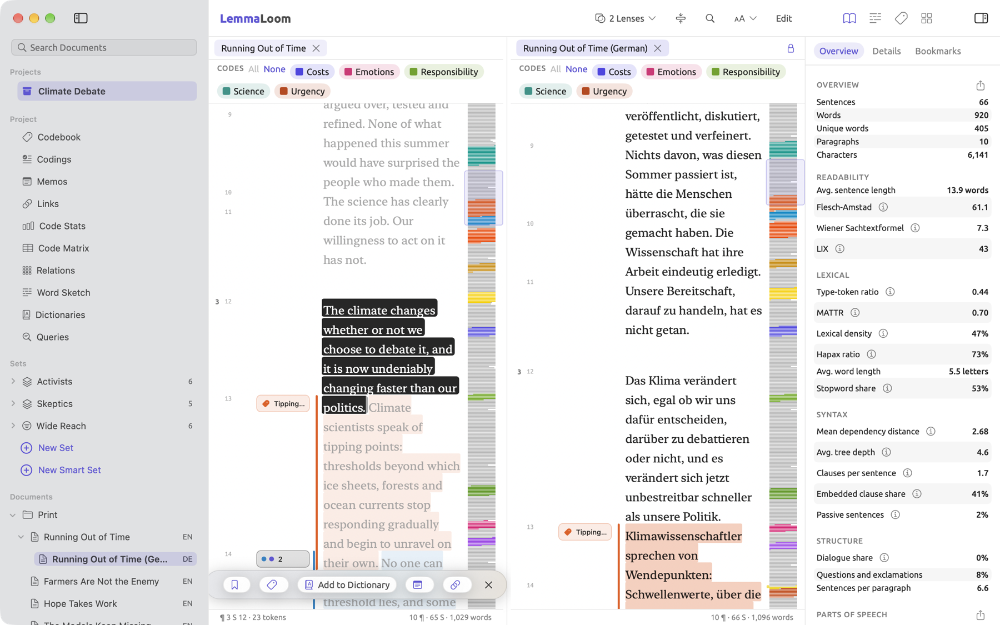
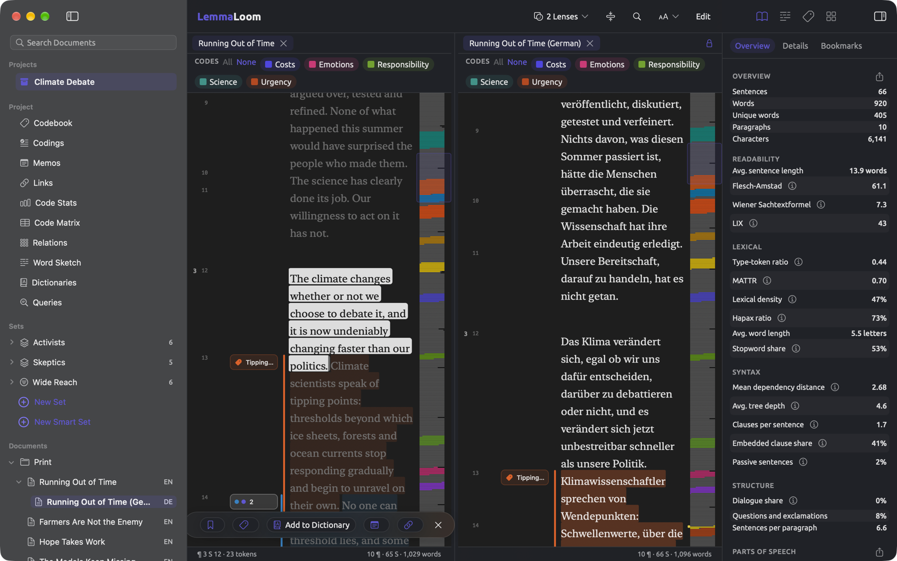
| Button | Where it is | Same as | Shortcut |
|---|---|---|---|
| Toggle Sidebar | Left end of the window’s toolbar | View ▸ Toggle Sidebar | ⌃⌘S |
| Toggle Inspector | Right end of the window’s toolbar | View ▸ Toggle Inspector | ⌃⌘I |
| × on a tab (Close Tab) | Row of tabs | File ▸ Close Tab, for the active tab | ⌘W |
| × on the right pane’s tab (Close Split View) | Top of the right pane in split view | File ▸ Close Tab, with the right pane active | ⌘W |
| The lock (Scroll together) | Top of the right pane, with two language versions side by side | View ▸ Scroll Together | ⌥⌘L |
| Find in document (the magnifying glass) | Title band | Edit ▸ Find | ⌘F |
| Larger Text, Smaller Text, Reset Text Size | The Font, gutter, and text size menu in the title band | The commands of the same names in the View menu | ⌘+, ⌘-, ⌘0 |
| Edit | Title band | Document ▸ Edit | ⇧⌘E |
| Save and Cancel | Title band, while you edit | Document ▸ Save and Document ▸ Cancel | ⌘Return and ⌘. |
| Next match and Previous match (the down and up arrows) | Search bar | Edit ▸ Find Next and Edit ▸ Find Previous | ⌘G and ⇧⌘G |
| Close search bar (×) | Search bar | Edit ▸ Find, while the bar is open | ⌘F or Esc |
| Bookmark or Remove Bookmark | Selection bar | Document ▸ Bookmark | ⇧⌘B |
| Code | Selection bar | Document ▸ Code | ⇧⌘C |
| In Vivo “…” | Last entry of the code palette | Document ▸ In Vivo Code | ⇧⌘V |
| Memo | Selection bar | Document ▸ Memo | ⇧⌘M |
| Link or Finish Link | Selection bar | Document ▸ Link | ⇧⌘L |
| Cancel the pending link (the crossed-out link) | Selection bar, while you are making a link | Document ▸ Cancel Link | ⌥⇧⌘L |
| Clear selection (×) | Selection bar | No menu command | Esc |
| Play or Pause | Player bar | Document ▸ Play | ⇧⌘P |
| Run Query (the triangle) | The bar above a query | Edit ▸ Run Query | ⌘R |
| Back and Forward (the arrows) | The bar above a word sketch | View ▸ Word Sketch ▸ Back and Forward | ⌘[ and ⌘] |
| Grammar, Coding, and Multimode | The mode control in the Word Sketch view and window | The commands of the same names under View ▸ Word Sketch | ⌘1, ⌘2, ⌘3 |
| Zoom in and Zoom out (the magnifying glasses) | The zoom bar of the Diagram window | View ▸ Zoom In and View ▸ Zoom Out | ⌘+ and ⌘- |
When viewing in full screen mode, the tools in the title band transfer to the toolbar in the window (refer to The full-screen reader in Chapter 5, Reading and Editing). Their shortcut keys remain functional too, and the text menu is called Reader Settings there.
Esc, Return, and the arrow keys
Esc, Return, and the arrow keys work outside the menus, and what they do depends on where you are.
The Esc key closes or clears what you are working in:
- In the reader, Esc will clear selections, leaving pending links alone. Should you change your mind about making a link, you could use Document ▸ Cancel Link (⌥⇧⌘L).
- In the search bar, Esc closes the bar and clears any active search.
- With Esc pressed in the code palette, you close that palette, retaining your current selection.
- For the Search Documents field and sidebar both, Esc clears the search results and displays all documents.
- In dialogs with a Cancel button, Esc triggers it.
- Lastly, should you happen to press Esc while renaming any of your projects, documents, sets, groups, or tags, you keep the old names.
In split view, Esc in the reader affects only the active pane.
Return accepts an input wherever needed, applies choices, or opens what you selected:
- With Return inside the search bar, you proceed to the next match of the search string (like ⌘G), whereas Return in the Search Documents field opens the first document found.
- From the sidebar, you may also click or press Return on a document to open it.
- In other lists, such as the Codebook, Codings, Memos, and Links views or the Tags window, a click selects an item, and a double-click or Return opens it.
- Inside the code palette, Return applies the highlighted entry (after typing in Search codes, the highlight goes to the very first remaining entry). If the selection already has the highlighted code, Return removes it.
- When operating a dialog with the cursor being outside all fields, or in a one-line field that does not handle Return itself, pressing Return clicks the highlighted button, such as Save or Auto Code; the fields in the items below handle Return themselves, even in a dialog.
- Renaming operations, including renaming a dictionary in the Dictionaries view, always accept Return or clicking elsewhere as confirmation of entered changes.
- Add a tag fields always accept Return or commas as tag separators.
- Add term fields in query text rules and dictionary categories accept Return to add the term. In a query, they will accept several terms separated by commas.
- After entering a new attribute name into its field, pressing Return adds the attribute.
- Return will add the entered pattern under Exclude from indexing in Import Document or Document Properties dialogs.
- Within Word fields of Word Sketch, Code Sketch, and Sketch Space, you get sketches of entered terms by pressing Return.
- Finally, inside the Analyzers window, Return clicks Save while you type in Name or a Label field.
↑ and ↓ move through the sidebar and the code palette:
- In the sidebar, ↑ and ↓ move through the available rows; pressing Return afterwards opens the newly selected document.
- With ↓ pressed inside the Search Documents field, you choose the first document from the results and move into the list.
- Within the code palette, ↑ and ↓ highlight successive entries in the palette, including Add Code “…” and In Vivo “…” at its end.
In a category’s table in the Dictionaries view, the Delete key (⌫) removes the selected terms.
Clicks with a modifier key
There are several actions which pair a key with your mouse or trackpad.
| Keys | Where | What it does |
|---|---|---|
| ⌘-click | A document in the Documents section of the sidebar | Adds the document to the selection, or takes it out again |
| ⇧-click | A document in the Documents section of the sidebar | Adds every document between it and the one you clicked last |
| ⌘ and scroll | The map of a word sketch, in Word Sketch, Code Sketch, or Sketch Space | Zooms in or out around the mouse pointer. Plain scrolling moves the enlarged map. |
Select multiple documents, right-click on any of them, and access actions which affect all selected documents (refer to Selecting several documents in Chapter 3, Projects and Documents). The zoom feature is detailed in The map in Chapter 12, Word Sketch.
All shortcuts by key
This table includes all of the shortcuts found within LemmaLoom’s menus organized first by modifier and then by key. The table may come in handy if you are trying to figure out which command you accidentally invoked, or whether keys you wish to assign are taken already.
| Keys | Command |
|---|---|
| ⌘, | LemmaLoom ▸ Settings… |
| ⌘. | Document ▸ Cancel |
| ⌘+ | View ▸ Larger Text, or View ▸ Zoom In in the Diagram window |
| ⌘- | View ▸ Smaller Text, or View ▸ Zoom Out in the Diagram window |
| ⌘[ | View ▸ Word Sketch ▸ Back |
| ⌘] | View ▸ Word Sketch ▸ Forward |
| ⌘0 | View ▸ Reset Text Size, or View ▸ Actual Size in the Diagram window |
| ⌘1 to ⌘3 | View ▸ Word Sketch ▸ Grammar, Coding, and Multimode |
| ⌘A | Edit ▸ Select All |
| ⌘C | Edit ▸ Copy |
| ⌘F | Edit ▸ Find |
| ⌘G | Edit ▸ Find Next |
| ⌘H | LemmaLoom ▸ Hide LemmaLoom |
| ⌘L | View ▸ Word Sketch ▸ Focus Word Field |
| ⌘M | Window ▸ Minimize |
| ⌘N | File ▸ New Window |
| ⌘Q | LemmaLoom ▸ Quit LemmaLoom |
| ⌘R | Edit ▸ Run Query |
| ⌘V | Edit ▸ Paste |
| ⌘W | File ▸ Close Tab or File ▸ Close |
| ⌘X | Edit ▸ Cut |
| ⌘Z | Edit ▸ Undo |
| ⌘Return | Document ▸ Save |
| ⌘⌫ | Project ▸ Delete Project, Delete Set, Delete Group, Delete Document, or Delete Documents, or Edit ▸ Delete Analyzer in the Analyzers window |
| ⇧⌘/ | The search field of the Help menu |
| ⇧⌘[ | Window ▸ Show Previous Tab |
| ⇧⌘\ | View ▸ Show All Tabs |
| ⇧⌘] | Window ▸ Show Next Tab |
| ⇧⌘A | Document ▸ Auto Code… |
| ⇧⌘B | Document ▸ Bookmark or Remove Bookmark |
| ⇧⌘C | Document ▸ Code |
| ⇧⌘E | Document ▸ Edit |
| ⇧⌘F | Edit ▸ Find Document |
| ⇧⌘G | Edit ▸ Find Previous |
| ⇧⌘I | File ▸ Import ▸ Documents |
| ⇧⌘L | Document ▸ Link or Finish Link |
| ⇧⌘M | Document ▸ Memo |
| ⇧⌘N | File ▸ New Project |
| ⇧⌘P | Document ▸ Play or Pause |
| ⇧⌘V | Document ▸ In Vivo Code |
| ⇧⌘W | File ▸ Close Window |
| ⇧⌘Z | Edit ▸ Redo |
| ⌥⌘0 | Window ▸ Activity |
| ⌥⌘1 to ⌥⌘4 | View ▸ Inspector ▸ Text, Grammar, Coding, and Multimode |
| ⌥⌘H | LemmaLoom ▸ Hide Others |
| ⌥⌘L | View ▸ Scroll Together |
| ⌥⌘N | File ▸ New Group |
| ⌥⇧⌘I | File ▸ Import ▸ Web Pages |
| ⌥⇧⌘L | Document ▸ Cancel Link |
| ⌃⌘F | View ▸ Enter Full Screen or Exit Full Screen |
| ⌃⌘I | View ▸ Toggle Inspector |
| ⌃⌘S | View ▸ Toggle Sidebar |
| ⌃Tab | Window ▸ Show Next Tab (merged windows) |
| ⌃⇧Tab | Window ▸ Show Previous Tab (merged windows) |
| fn E | Edit ▸ Emoji & Symbols |
| ⌃fn C | Window ▸ Center |
| ⌃fn F | Window ▸ Fill |
Coding from the keyboard
You select a passage via mouse or trackpad interaction, but nearly everything around it can be done from the keyboard. Suppose you are reading “Climate Debate” for passages about deadlines, with “Running Out of Time” and “Letter from the Climate Strike” open in tabs and “Running Out of Time” active. Feel free to import the example project with File ▸ Import ▸ Example Project to follow along.
- Press ⌥⌘3. The inspector shows its Coding tab.
- Press ⌘F and type
retired. The reader goes to the only match, in the paragraph about the dates that leaders have promised. - Press Esc to close the search bar.
- Select the sentence A deadline that falls after everyone in office has retired is not a deadline at all.
- Press ⇧⌘C. The code palette opens with the cursor in Search codes.
- Type
dead. “Deadlines” is the only code left in the list. - Press Return. “Deadlines” gets a checkmark, and the palette stays open.
- Press Esc to close the palette. The passage is still selected.
- Press ⇧⌘M. The New Memo dialog opens.
- Click in the Memo field and type a note such as
Targets fall after their authors retire; compare Letter from the Climate Strike. - Click Save.
- Press ⇧⌘] to go on to “Letter from the Climate Strike”.
When applying a code to an incorrect passage, close the palette and hit ⌘Z. Edit ▸ Undo Apply Code takes the coding back. When the palette is active, hitting Return once more removes “Deadlines”.
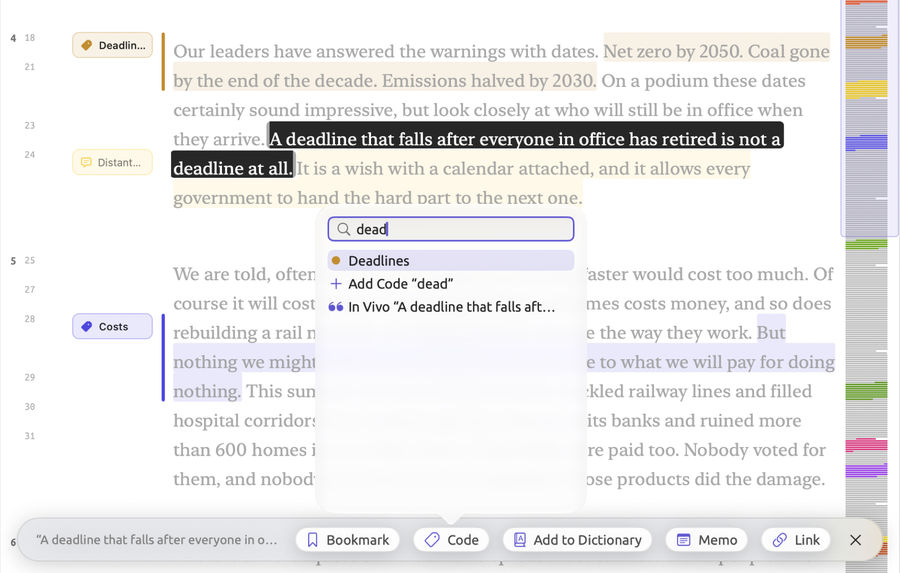
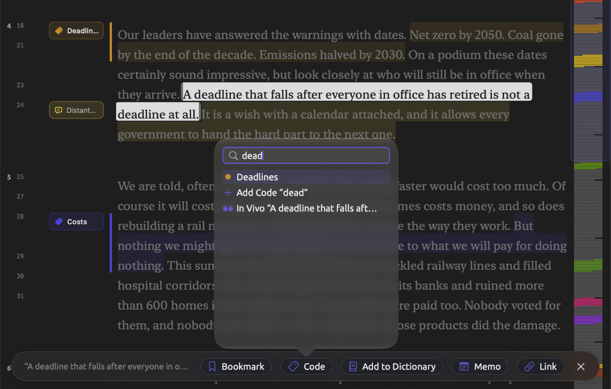
Adding custom keyboard shortcuts
It is possible to define a keyboard shortcut for any menu command within any app in macOS. This allows you to quickly run commands you regularly execute, like Edit ▸ Query from Selection and Project ▸ Add Code. Additionally, you may redefine existing shortcuts to your liking.
- Open System Settings and click Keyboard.
- Click Keyboard Shortcuts….
- Click App Shortcuts in the list on the left.
- Click the add button (+).
- Choose LemmaLoom as the application.
- As the menu title, type the command’s name exactly as the menu shows it, such as
Query from Selection. - Click in the shortcut field and press keys that are still free (see All shortcuts by key earlier in this chapter), such as ⌃⌥⌘Q.
- Click Done.
When assigning keys to an item whose name has an ellipsis, e.g., Auto Code…, type the ellipsis as a single character. On the US keyboard, this means pressing Option along with the semicolon key, rather than entering three periods. Some items occur twice in the application’s menus (for example, REFI-QDA Project is under both Import and Export). For this sort of case, you would need to input the whole path to the command with the separator -> in between menus, e.g., File->Export->REFI-QDA Project.
Once saved, the shortcut appears next to the command in LemmaLoom’s menu. If it does not, quit LemmaLoom and relaunch the app.
macOS identifies commands based on the names of their respective menu items. This means that the name you type should match the menu entry’s name in the currently selected application language. Changing languages thus necessitates setting the shortcuts all over again according to the new command names, such as Abfrage aus Auswahl in German. For the same reason, any command changing names will answer to your shortcut only under the name you typed. Keys assigned to the Auto Code… command no longer function when multiple lenses capable of auto coding are enabled simultaneously, because the menu then offers Auto Code with Hedges… and similar commands instead.